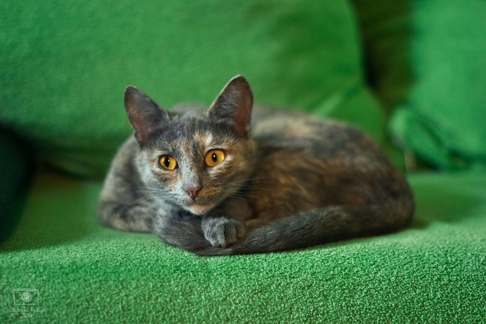

Тест: Знаете ли вы свою кошку?
Существует масса ложных стереотипов о кошках: их считают мстительными и независимыми созданиями, хотя это вовсе не так. Часто проблема в том, что мы попросту не понимаем, чего от нас хотят эти загадочные хищники: оставить их в покое, покормить, поиграть или приласкать? Лучше понимать своего пушистого питомца поможет язык тела – проверим, насколько вы хорошо его знаете!
Вопрос 1/1
Что вы можете сказать о состоянии этой кошки по ее позе?

(Выберите один вариант ответа)
Выберите
Выберите один
3/9
Кажется, вы знаете о каланах и сивучах далеко не все. Почитайте о них на странице нашего проекта; откроете для себя много нового и интересного!